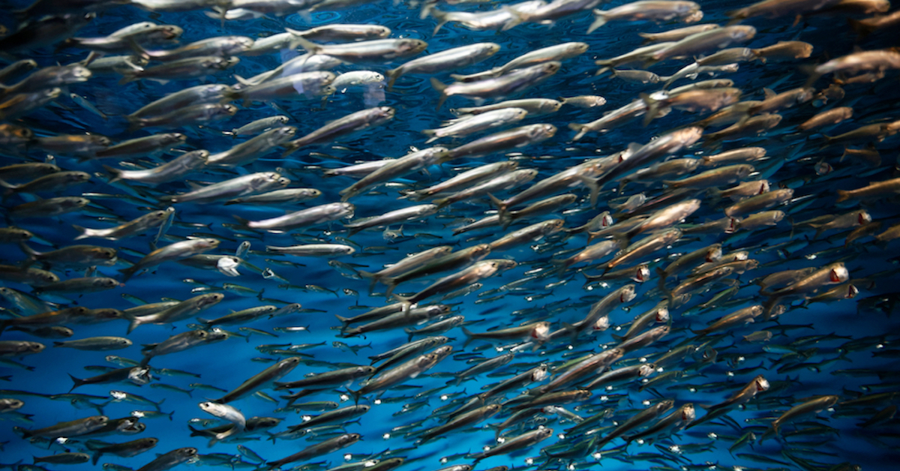

Visualizing Sardine Population¶
# import required packages
import numpy as np
import pandas as pd
import plotly.express as px
The collapse of the pacific sardine population propelled the formation of The California Cooperative Oceanic Fisheries Investigations (CalCOFI) in 1949 to better understand the delicate ocean ecosystem. In their research article, they hypothesize temperature to be the leading cause of the decline. Yet, results of their analysis concludes a multitude of different variables- such as a change in migration patterns and predatory behaviors. Thus the question still remains: has the sardine population recovered from the effects of this decline?

We can visualize the sardine population using two different methods. The first method is to track the amount of sardine larvae recorded each years. The reasoning behind this is simple: higher numbers of sardine larvae should lead to more adult sardine in the future. The second method is similar- visualize the pounds of adult sardine caught. More sardine caught in a given year may indicate that there was a higher amount of sardine present in the wild.
Sardine Larvae Per Year¶
The chart below visualizes the amount of sardine larvae, in thousands of pounds, recorded per year. Recall that the number of sardine larvae should be able to act as an indicator and help predict the number of adult sardine that will be caught.
sardine_larvae = pd.read_csv("data/sardine_larvae.csv")
fig = px.line(
sardine_larvae,
x = 'Year',
y = 'Sardine Larvae lbs',
title = 'Sardine Larvae Pounds Per Year',
labels={'Sardine Larvae lbs':'Sardine Larvae (Lbs.)'})
fig.show()
---------------------------------------------------------------------------
ValueError Traceback (most recent call last)
<ipython-input-2-fc1c000f9a0c> in <module>
5 y = 'Sardine Larvae lbs',
6 title = 'Sardine Larvae Pounds Per Year',
----> 7 labels={'Sardine Larvae lbs':'Sardine Larvae (Lbs.)'})
8 fig.show()
~/.local/lib/python3.6/site-packages/plotly/express/_chart_types.py in line(data_frame, x, y, line_group, color, line_dash, hover_name, hover_data, custom_data, text, facet_row, facet_col, facet_col_wrap, facet_row_spacing, facet_col_spacing, error_x, error_x_minus, error_y, error_y_minus, animation_frame, animation_group, category_orders, labels, orientation, color_discrete_sequence, color_discrete_map, line_dash_sequence, line_dash_map, log_x, log_y, range_x, range_y, line_shape, render_mode, title, template, width, height)
250 a polyline mark in 2D space.
251 """
--> 252 return make_figure(args=locals(), constructor=go.Scatter)
253
254
~/.local/lib/python3.6/site-packages/plotly/express/_core.py in make_figure(args, constructor, trace_patch, layout_patch)
1859 apply_default_cascade(args)
1860
-> 1861 args = build_dataframe(args, constructor)
1862 if constructor in [go.Treemap, go.Sunburst] and args["path"] is not None:
1863 args = process_dataframe_hierarchy(args)
~/.local/lib/python3.6/site-packages/plotly/express/_core.py in build_dataframe(args, constructor)
1376
1377 df_output, wide_id_vars = process_args_into_dataframe(
-> 1378 args, wide_mode, var_name, value_name
1379 )
1380
~/.local/lib/python3.6/site-packages/plotly/express/_core.py in process_args_into_dataframe(args, wide_mode, var_name, value_name)
1181 if argument == "index":
1182 err_msg += "\n To use the index, pass it in directly as `df.index`."
-> 1183 raise ValueError(err_msg)
1184 elif length and len(df_input[argument]) != length:
1185 raise ValueError(
ValueError: Value of 'y' is not the name of a column in 'data_frame'. Expected one of ['Year', 'Count'] but received: Sardine Larvae lbs
The first thing to notice is that there was barely any sardine larvae recorded up until the mid 1980s. Explanations could possibly be that either the sardine larvae data wasn’t being properly recorded, or whether there was literally no sardine larvae to be seen. It could also be a mix of the two problems where because the sardine population was so scarce, that in turn made the sardine larvae count to also be scarce. Also, as time progresses, technology and recodkeeping became better, so the lack of data in the past may simply be a technological error. Overall, the population seems to have been suffering up until the 1990s, and then there was a major spike right before the year 2000, and even more spikes at around 2005 and 2010. This could be explained due to better technology over time or the that the spikes in population has something to do with the environmental factors at that time, specifically the events of la nina and el nino as mention in the research article.
Adult Sardine Per Year¶
The chart below visualizes the number of adult sardine, in thousands of pounds, caught per year.
landing_sardine = pd.read_csv("data/landing_sardine.csv")
fig = px.line(
landing_sardine,
x='Year',
y = 'CatchLbs',
title = "Sardine Catch Lbs Per Year",
labels = {'CatchLbs':'Amount Caught (Lbs.)'})
fig.show()
The first observation we can make is that there was a rise sardine caught in the mid 1990s, which is around the same time that the recorded sardine lavae was beginning to increase. The original larvae visualization showed a spike in larvae count for certain years, which don’t seem to correlate at the same time as the catch data. However, based on the two visualization we’ve seen before, we can infer that the pacific sardine population is slowly getting better since the mid 1990s. One reason to explain the mismatching spikes for both visualization could be a better understanding of our ocean’s ecosystem and the concious of overfishing. Thus, just because there is more fish in the ocean doesn’t mean that catching all of it is the right thing.